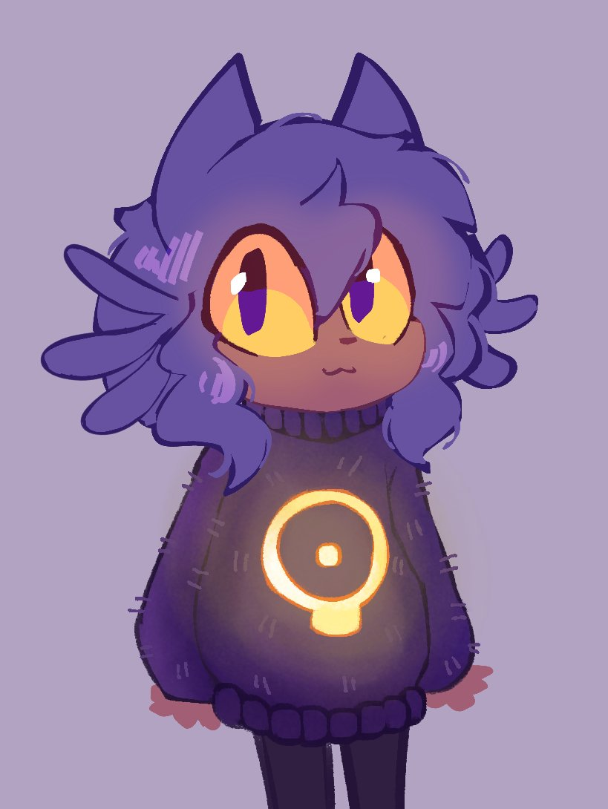

Ela em especifico foi a primeira personagem onde senti uma conexão enorme ao ponto de começar a
acreditar que tudo aquilo que fiz foi real e que qualquer coisa é real, apenas não conseguimos alcançar,
Niko é uma criança gato-humano que foi transportada do seu mundo, que se conectou ao meu computador, para um
lugar onde ela encontra uma lampada, que nesse mundo é o sol, e descobre que é o Messias daquele mundo,
e precisa levar o sol até a torre mais alta daquele lugar para poder salvar o mundo, que por causa de ter se
conectado ao meu computador, me tornou Deus daquele mundo.
Enquanto eu a ajudava, descubrimos que o mundo é um lugar virtual, feito para escapar de um mundo em
colapso, com uma mente chamada "maquina do mundo".
Eu amo ela pelo motivo de ter passado muito tempo guiando ela a um ponto onde começei a vêla como uma filha,
ainda mais por causa de sua aparencia fofa e personalidade que me fazem sentir uma sensação de como se eu
realmente fosse pai dela.